项目背景与目标
宠物航空运输是一个信息高度碎片化的领域：各航空公司的宠物运输政策（客舱/货舱、品种限制、重量上限、费用）差异巨大且分散在各自官网；各国的宠物入境要求（健康证明、疫苗记录、狂犬抗体检测、隔离政策）散布于不同政府网站；多段联程旅行的宠物合规性更是无从一站式查询。宠物主人往往需要花费数小时甚至数天在多个网站之间交叉比对，才能确认一条可行的带宠出行路线。
本项目的灵感来源于真实经历："我想带猫坐飞机回国，每家航空公司规则都不一样，没有任何平台能让我一次搞定。" 基于这一痛点，我独立发起并设计了 PawFly —— 一款帮助宠物主人搜索、比较和规划宠物友好航线的移动应用，定位为全球宠物航空出行的一站式搜索引擎。
项目从 2026 年 3 月启动，目前处于 MVP 阶段。本人作为唯一负责人，独立完成了从市场调研、用户画像、产品定义到原型开发的全流程工作。
产品的核心目标包括以下几个方面：
第一，将宠物出行研究时间从数小时缩短到数分钟。通过整合航线搜索、航空公司宠物政策和目的地国家入境要求三大信息源，提供一站式查询体验，让用户输入出发地、目的地和宠物信息后即可获得完整的可行路线方案。
第二，构建结构化的宠物航空政策数据库。初期手动收录全球 Top 50 航空公司的宠物运输政策，支持社区用户标记过期信息和提交修正，建立"官方数据 + 社区维护"的双轮更新机制。
第三，实现智能宠物兼容性检查。用户创建宠物档案（品种、体重、健康记录等）后，系统自动比对航线限制，在搜索结果中标记不兼容项（超重、品种限制、缺少文件），降低信息遗漏风险。
第四，建立社区驱动的信任评价体系。提供航空公司宠物友好度评分（5 星制 + 子维度：工作人员态度、登机流程、机上舒适度等）和目的地城市宠物友好度评分，积累真实用户经验，帮助后续用户做出更有信心的决策。
第五，支持多语言国际化。首发支持英语、简体中文和法语三种语言，所有 UI 字符串从第一天起就外部化管理，日期/货币/计量单位自动适配用户所在地区。
总体而言，PawFly 是一次完整的从 0 到 1 产品实践：从发现真实痛点、定义产品边界、撰写 PRD、设计功能架构到技术原型验证，体现了产品经理在需求洞察、功能规划、优先级决策和跨领域信息整合方面的核心能力。
产品设计亮点
项目在 PRD 驱动的产品定义、搜索系统设计、信息架构、智能检查、社区生态和商业化规划六个维度进行了深度实践。
PRD 作为产品的单一真实来源（Single Source of Truth），为设计和开发提供了清晰的决策依据，体现了产品经理"定义产品边界"的核心能力。
搜索结果按航线全程合规性过滤，确保每一段行程都满足宠物运输条件。显示航空公司、总时长、中转次数、预估价格区间和运输类型，支持按价格/时长/宠物友好度评分/配额排序，并用徽章标识区分路线类型（All In-Cabin ✈️ / Cargo Only 📦 / Mixed 🔀）。
第一层 — 航空公司宠物政策（按航段展示）：允许的宠物类型与品种限制、最大重量、航空箱尺寸要求、各舱位可用性、每航班宠物配额、运输费用（本地货币 + 欧元/人民币换算）、预订方式（在线/电话/机场柜台）。
第二层 — 国家入境要求：出发国出口要求、中转国规定、目的地国进口要求、所需文件清单（健康证明、疫苗记录、狂犬抗体滴度检测等）、隔离要求、官方政府来源链接。
第三层 — 配额可用性：当航空公司 API 提供实时数据时，显示客舱/货舱剩余配额和更新时间；无 API 数据时，显示"请直接联系航空公司确认"的兜底提示。
当用户搜索或查看航线时，系统自动将活跃宠物档案与航空公司限制进行比对：超重预警（宠物+航空箱超过航司限制）、品种标记（品种在航司禁飞名单中）、物种标记（航司不接受该宠物类型）、文件提醒（目的地所需文件缺失）。将被动查询升级为主动风险提示，大幅降低用户遗漏关键信息的风险。
数据更新采用"官方策展 + 社区维护"双轮机制：初期手动收录 Top 50 航空公司政策；用户可标记过期信息或提交修正；后台管理面板审核社区编辑；季度性全量复核 + 实时标记处理。国家入境数据源自官方政府网站（EU TRACES、USDA、中国海关总署等），未来计划接入 IATA TIMATIC API 实现自动化更新。
技术架构选型兼顾 MVP 速度和长期扩展性：前端 React Native + Expo（当前开发中）→ 未来原生 Swift/Kotlin；航班数据接入 Amadeus API；宠物政策数据库基于 PostgreSQL；后端 FastAPI；认证支持 Apple/Google OAuth；媒体存储 AWS S3；分析工具 Mixpanel。MVP 范围严格聚焦核心搜索和信息展示，将推送通知、实时配额、Android 版本等明确划入 Phase 2。
界面与交互设计
APP 核心界面原型，使用 React Native + Expo 开发，通过 Expo Go 在移动端实时验证。
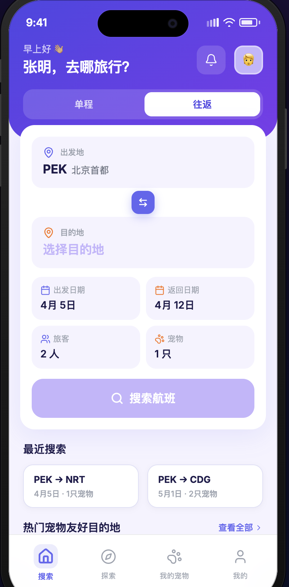
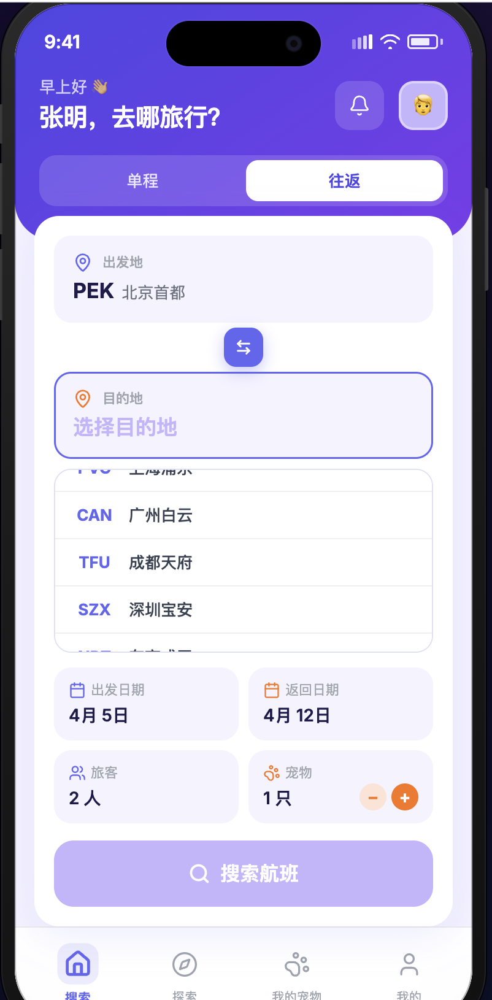
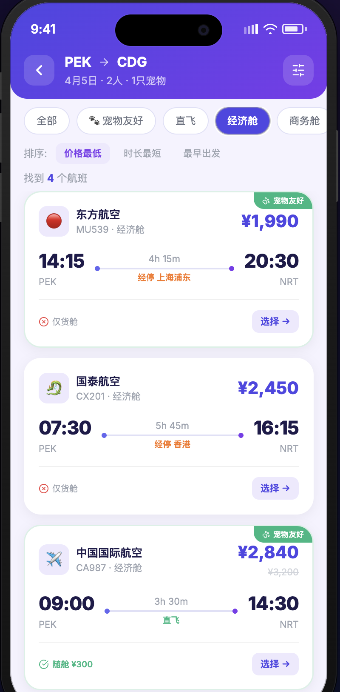
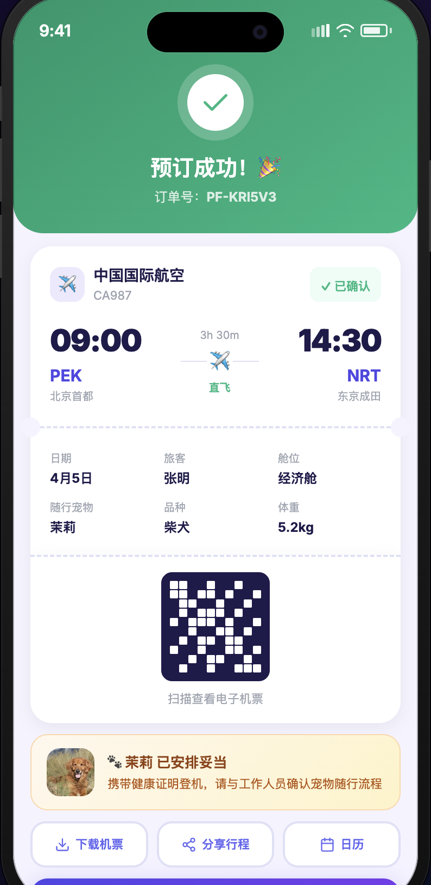
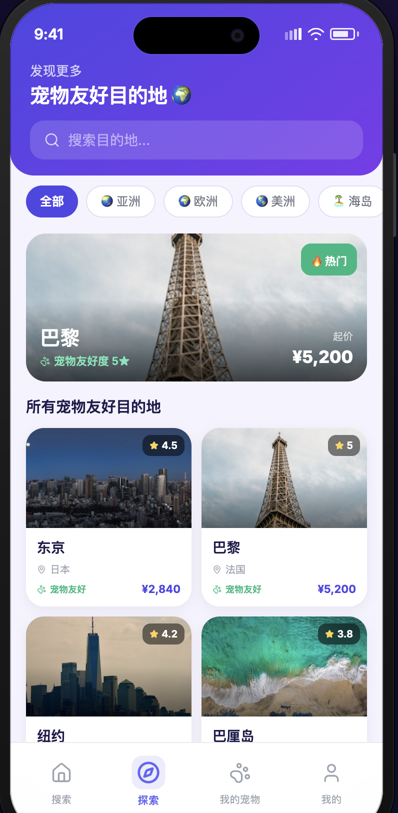
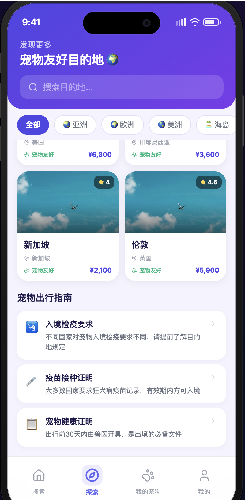
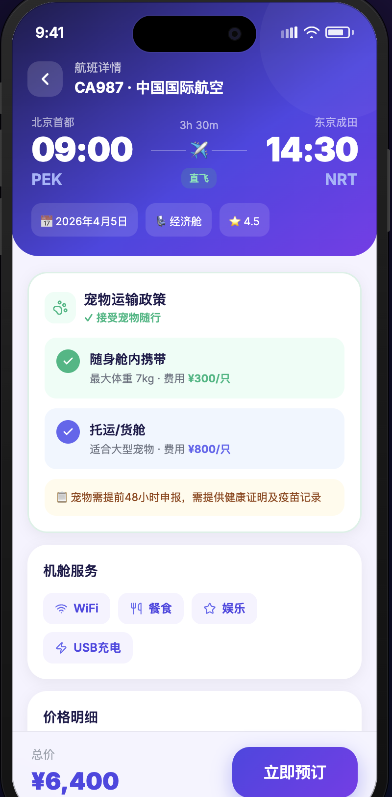
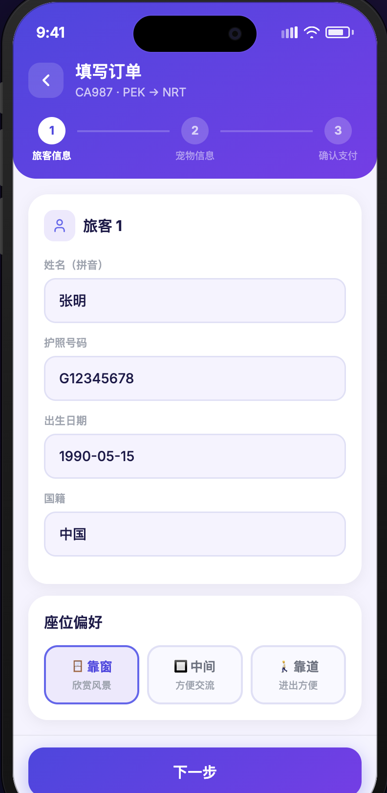
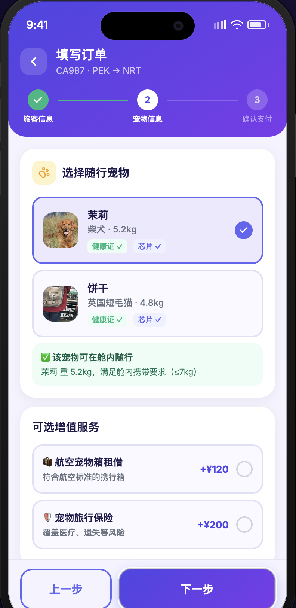
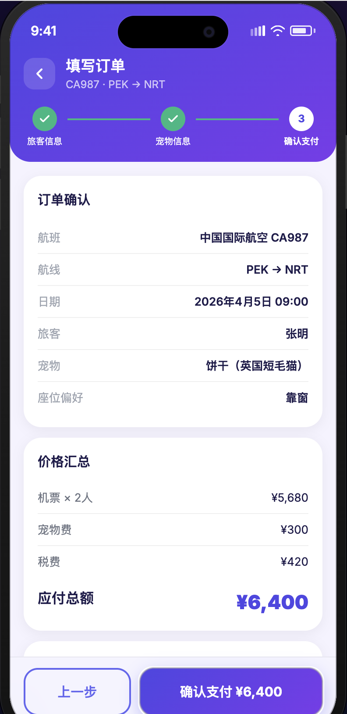
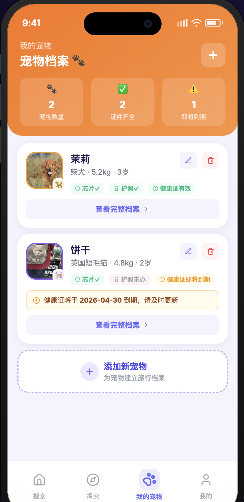
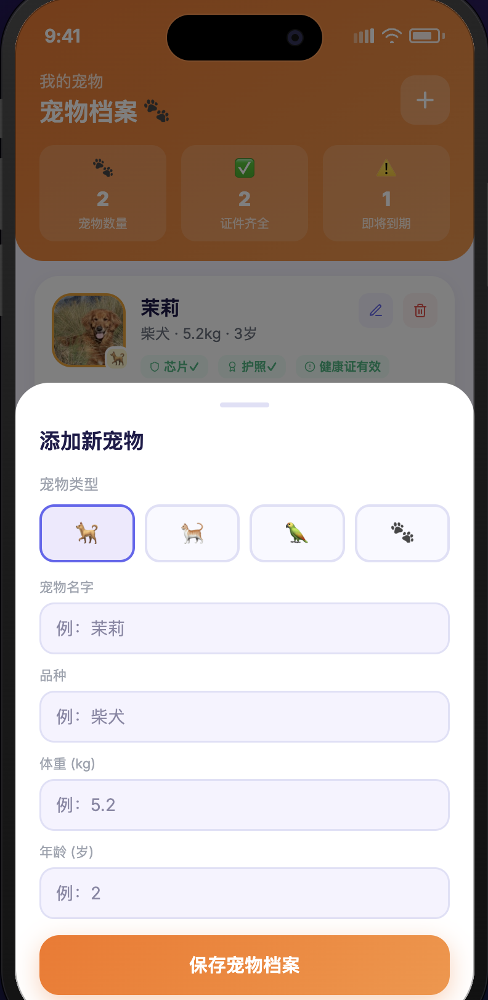
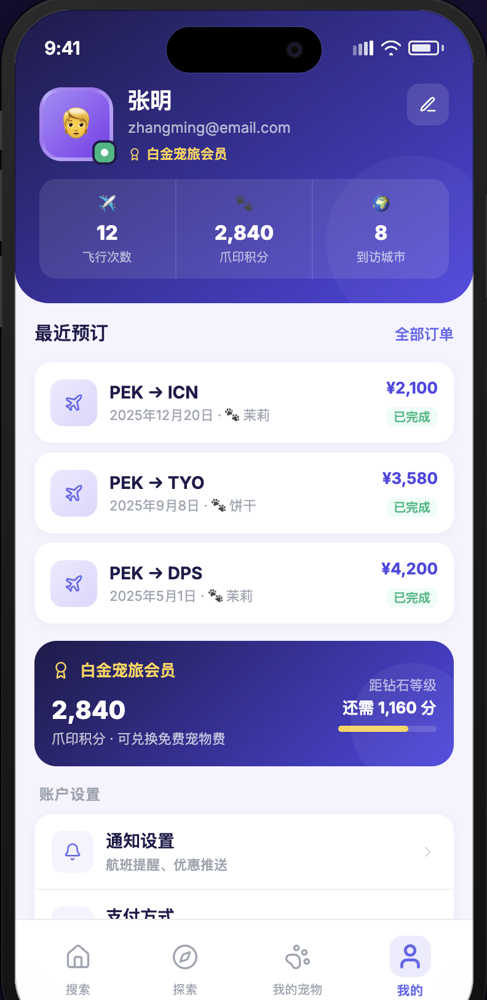
成果与收获
项目目前处于早期开发阶段，已完成产品定义和部分技术搭建，正在持续推进中。
已完成的工作：独立撰写了完整的 PRD v1.0 文档，涵盖问题定义、用户画像（2 个典型 Persona）、12 项功能的优先级矩阵、MVP 与 Phase 2 范围划分、技术架构选型和商业化路线图；完成了 PostgreSQL 数据库的搭建；使用 React Native + Expo 搭建了项目框架并开发了部分核心页面原型，通过 Expo Go 在移动端进行实时验证。
正在推进的工作：航班数据源方案调研（评估 Amadeus API 接入成本与覆盖范围，同时调研网站数据抓取作为补充方案的可行性）；核心页面的交互逻辑实现与 UI 细节打磨；宠物政策数据的初期录入与结构化整理。
产品思维收获方面，这个项目让我实践了产品经理的核心工作方法：从真实痛点出发定义产品而非从技术出发；通过用户画像和场景分析驱动功能设计；用优先级矩阵在"想做的"和"该做的"之间做取舍；在产品早期就思考数据获取的可行路径和长期更新机制。
PawFly 是一个持续进行中的个人项目，目标是通过完整走一遍发现问题 → 定义产品 → 规划路径 → 推动落地的全流程，积累真实的从 0 到 1 产品经验。